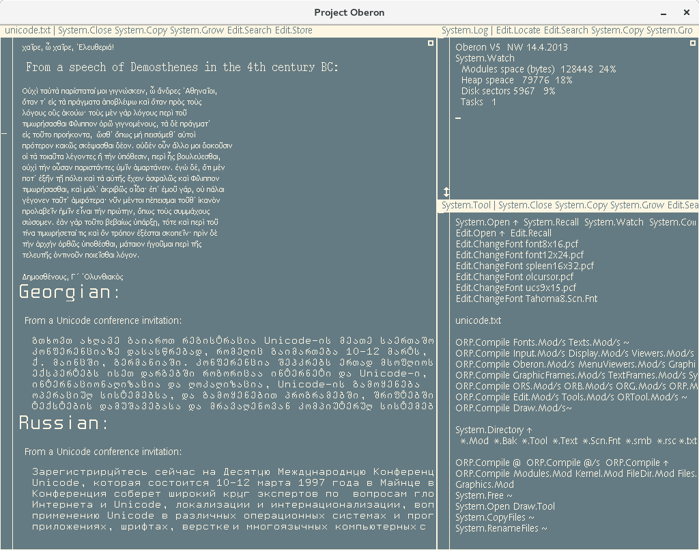
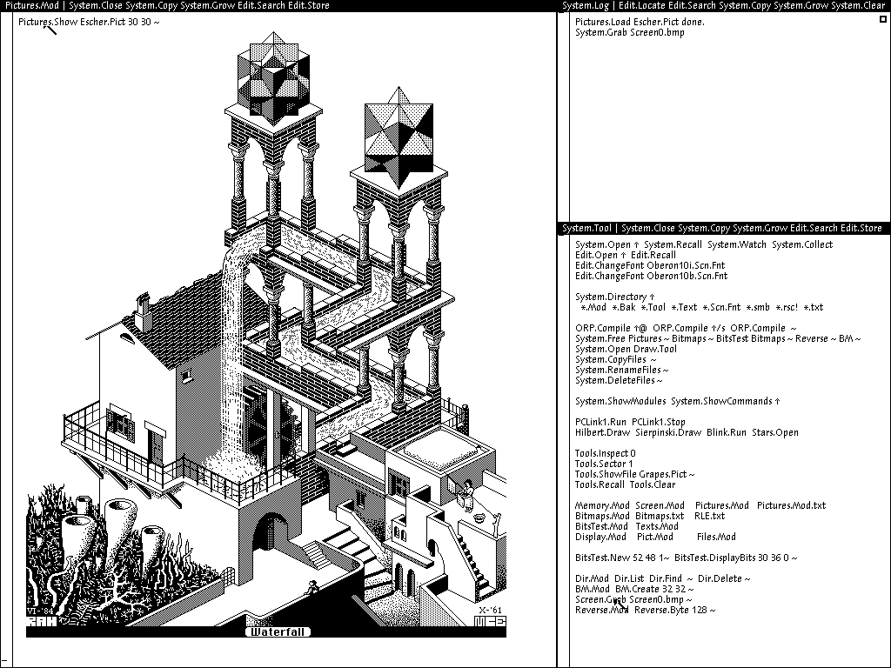
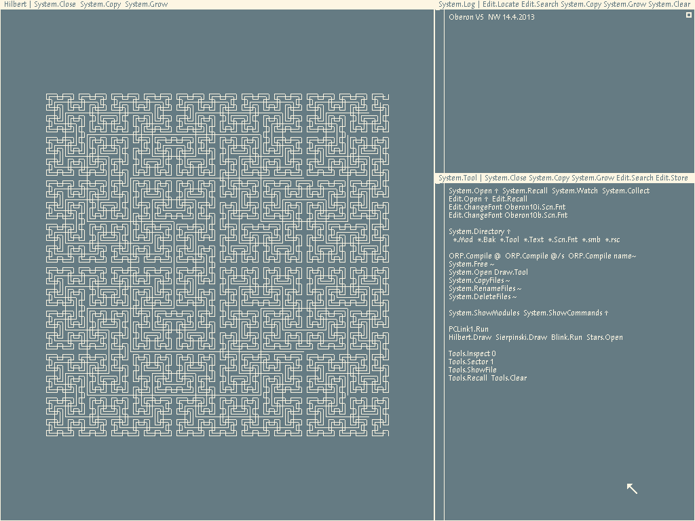

Overview¶
{kind=link}
Welcome to Integrated Oberon¶
Glad you are here!
What is Integrated Oberon¶
Integrated Oberon is a self-contained operating system with a unique Textual User Interface adopting common features (starting with Unicode) and intended to be a personal workstation for general purpose computing.
It is also very different from Windows or the Mac or Unix, both in how you use it and in how it works.
{kind=link}
IO is derrived from Oberon, an OS and also a programming language developed indepentently of Unix or Windows or C with an emphaisis on simplicity. Niklaus Wirth and Jürg Gutknecht implemented the first version of Oberon in 1986 on custom hardware. Oberon has since been ported to many general purpose computing platforms. Further developments of Oberon demonstrated multiprocessing, networking, 64-bit support, color, graphical widgets, etc. operating natively and/or in a host OS.
 {kind=link}
{kind=link}
In 2013 Niklaus Wirth revisited the original Oberon OS and programming language, reducing the OS and language to their most primitive components and porting both to a simplified RISC target on an FPGA development board. IO is based on Project Oberon 2013.
The goal of Integrated Oberon is to introduce a number of mechanisms and capabilities to this refined base OS, including supporting multiple 32 and 64 bit architectures, multicore computation via CSP, internetworking, clustering, accellerated graphics, integration and interoperation with foreign systems, etc. The intention is not to recapitulate other existing systems but instead to adopt lessons learned from other systems at a fundamental level within Oberon to exert maximum leverage of the concept within the Integrated Oberon system.
Currently IO is little more than Project Oberon 2013 with support for Unicode code points (not even composed glyphs) and the beginnings of support for cross-compilation.
Perhaps with your help it could be more, sooner!
News¶
Events having to do with Integrated Oberon
Latest Release¶
Current: v5.1.20210224
Stable: v5.0.0
A Note on version numbers: Oberon v1, v2, v3, and v4 designate previous developments in the Oberon OS. Wirth returned to the essential elements of v1 for v5. Integrated Oberon as a system starts by applying some minor changes to v5 and so begins with v5.1.<date> which is an IO version number and not an Oberon version number as Wirth et. all very likely have entirely different ideas about what constitutes an incremental improvement to the Oberon language and OS!
Modules within IO may have other version numbers but those adopted from v5 Oberon will begin with v5.0.0 and go up appropriately.
Changelog¶
From v5.0.0 to v5.1.20210224:
Add Unicode fonts and glyph handling
Accept /n for newlines and use /n by default
Introduce batch processing
Introduce docstrings for automatic documentation
Gallery¶
Some images of Integrated Oberon should go here.